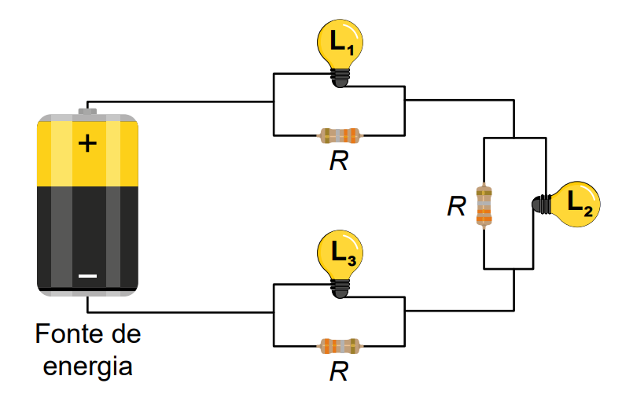

ENEM 2023) O circuito com três lâmpadas incandescentes idênticas, representado na figura, consiste em uma associação mista de resistores. Cada lâmpada (L1 , L2 e L3) é associada, em paralelo, a um resistor de resistência R, formando um conjunto. Esses conjuntos são associados em série, tendo todas as lâmpadas o mesmo brilho quando ligadas à fonte de energia. Após vários dias em uso, apenas a lâmpada L2 queima, enquanto as demais permanecem acesas.

Em relação à situação em que todas as lâmpadas funcionam, após a queima de L2, os brilhos das lâmpadas serão
Queremos luz com comprimento de onda pequeno para ter espaço para mais informação.
Circuitos em paralelos diminuem a resistência equivalente, ou seja, aumentam a corrente total.
Quando L2 queima, a resistência equivalente aumenta, logo, a corrente total diminui. Portanto, a intensidade das lâmpadas 1 e 3 vão diminuir.
Gabarito: C) menos intensos.
O brilho de uma lâmpada depende da corrente elétrica que percorre ela. Então devemos saber se as lâmpadas 1 e 3 vão ter um aumento ou diminuição da corrente elétrica.
Quando temos um circuito em paralelo, a corrente aumenta para cada aparelho colocado.
imagem circuito paralelo
Fisicamente, se eu tiver uma tomada e começar a ligar vários aparelhos, a corrente vai aumentar para poder alimentar tudo. Por isso é perigoso colocar vários aparelhos na mesma tomada.
Nesse circuito, esse R2 e L2 estão em paralelo. Então se L2 queimar, a corrente total vai diminuir. Com a diminuição da corrente, as lâmpadas 1 e 3 vão diminuir o brilho.